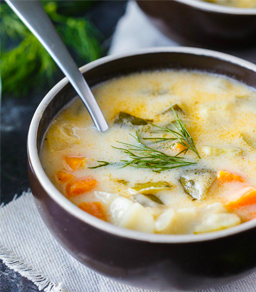
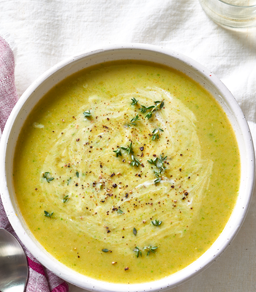
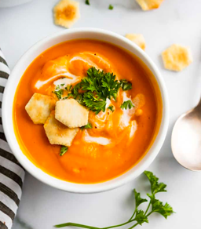
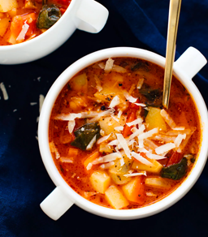
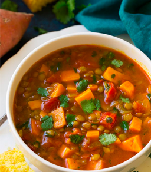
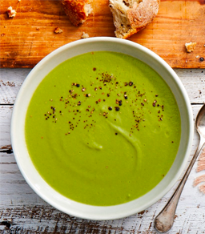
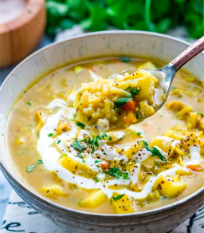

Bright citrus notes lead the way for this earthy carrot soup
you can enjoy hot or chilled. The background ginger fragrance
leads the palate to notice the root flavour giving the soup a more
complex balance of sweet and spice.
df
gf
v

Creamy Dilly Spuddy
As perfect as it sounds, a silky pureed classic potato soup with onion,
garlic and fresh cream. Then LOADS and LOADS of fresh dill. Simple
and delicious.
gf

Greek Potato Leek
A vegetarian “vichyssoise“, a fresh twist on traditional Potato Leek,
this fresh soup has malt vinegar and lemon. Pureed but still thick,
it can be enjoyed both hot and cold.
df
v

Maple Roaseted Sweet Potato
Slow roasted sweet potaotes are doused in Ontario maple syrup with
Chef's favourite spices and cider vinegar to keep a savoury lingering
bouquet on your palete. This wholesome soup is a sweet potato lover's
dream with its smooth and creamy texture.
df
gf
v

Minestrone
Our North American version of this Italian soup is vegan.
Starting with vegetable stock and crushed tomatoes this broth soup has
large pieces of zucchini, kale, carrots, celery, and leeks. With great
northern beans adding more texture, and basil and oregano for depth,
this vegan soup will satisfy your hunger.
df
vg
v

Sweet Onion Lentil
Lightly curried sweet onions with green and red lentils that are left
whole for an array of textures. In an onion broth with hints of
cinnamon and rice venegar, this vegan soup fills a hearty bowl.
df
gf
v

Sweet Pea
This soup is inspired by “Mushy Peas” and boasts a crushed pea
texture and beautiful creamy natural sweetness. With just a bit of
cider and red wine vinegar to brighten the richness of the sweet peas,
this soup can be enjoyed hot or cold.
gf

Mulligatawny
Literally translated to mean Pepper Water, Chef's version of this
Indian spiced soup has a beautiful fragrance, with medium and hot
spices. Pureed lentils, vegetables and split peas give this soup a
hearty texture, with a rich creamy coconut finish.